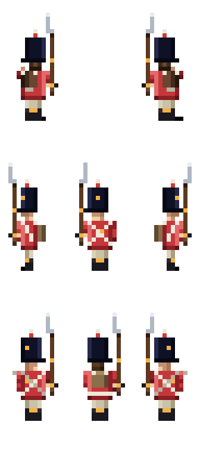
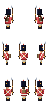

Soldier Component Gallery
Open this file directly in a browser — no build or dev server required. The images are the latest outputs generated in public/sprites/.
Composite Preview

british-line-infantry-components-preview.pngComposite Atlas

british-line-infantry-components.pngComponent Layers
sprites/components/anatomy/body/front/base.png sprites/components/anatomy/head/front/default.png
sprites/components/anatomy/head/front/default.png sprites/components/anatomy/legs/front/idle.pngsprites/components/anatomy/torso/front/slim.pngsprites/components/shadow/front/default.pngsprites/components/uniform/coat-line/front/base.pngsprites/components/uniform/head/shako-standard.pngsprites/components/uniform/lower/trousers-front.pngsprites/components/weapon/musket/front/idle.png
sprites/components/anatomy/legs/front/idle.pngsprites/components/anatomy/torso/front/slim.pngsprites/components/shadow/front/default.pngsprites/components/uniform/coat-line/front/base.pngsprites/components/uniform/head/shako-standard.pngsprites/components/uniform/lower/trousers-front.pngsprites/components/weapon/musket/front/idle.png